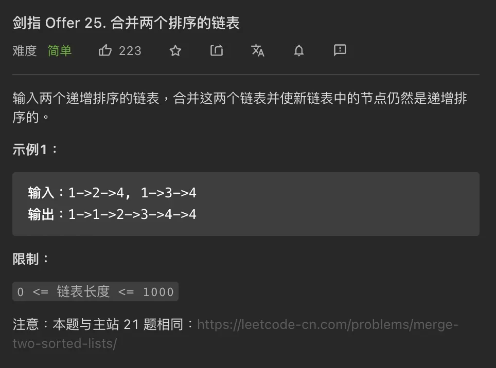

剑指 Offer 25. 合并两个排序的链表
Question

✍🏽 My Solution
Solution #1 [王爭-Recursion]
执行用时：0 ms, 在所有 Java 提交中击败了100.00%的用户
内存消耗：41.2 MB, 在所有 Java 提交中击败了50.59%的用户
class Solution {
public ListNode mergeTwoLists(ListNode l1, ListNode l2) {
if (l1 == null) return l2;
if (l2 == null) return l1;
// 如果l1.val <= l2.val，那么頭節點的值为l1.head的值，然後開始遞歸
if (l1.val <= l2.val) {
ListNode subHead = mergeTwoLists(l1.next, l2);
l1.next = subHead;
return l1;
} else { //否则，头结点的值为l2.head的值，然后开始递归
ListNode subHead = mergeTwoLists(l2.next, l1);
l2.next = subHead;
return l2;
}
}
}
Explanation (in my words)
- How does their solution work?
- 特判：如果有一個鏈表為空，返回另一個鏈表 如果l1節點值比l2小，下一個節點應該是l1，應該return l1，在return之前，指定l1的下一個節點應該是 l1.next 和 l2 倆鏈表的合並後的頭結點 如果l1節點值比l2大，下一個節點應該是l2，應該return l2，在return之前，指定l2的下一個節點應該是 l1 和 l2.next 倆鏈表的合並後的頭結點
//(1,1):代表第一次进入递归函数，并且从第一个口进入，并且记录进入前链表的状态
merge(1,1): 1->4->5->null, 1->2->3->6->null
merge(2,2): 4->5->null, 1->2->3->6->null
merge(3,2): 4->5->null, 2->3->6->null
merge(4,2): 4->5->null, 3->6->null
merge(5,1): 4->5->null, 6->null
merge(6,1): 5->null, 6->null
merge(7): null, 6->null
return l2
l1.next --- 5->6->null, return l1
l1.next --- 4->5->6->null, return l1
l2.next --- 3->4->5->6->null, return l2
l2.next --- 2->3->4->5->6->null, return l2
l2.next --- 1->2->3->4->5->6->null, return l2
l1.next --- 1->1->2->3->4->5->6->null, return l1
- What is the space/time complexity of their solution?
- 假設 l1 n 個節點， l2 m個節點
- time: O(n+m) ，因為總節點n+m
- space: O(n+m)